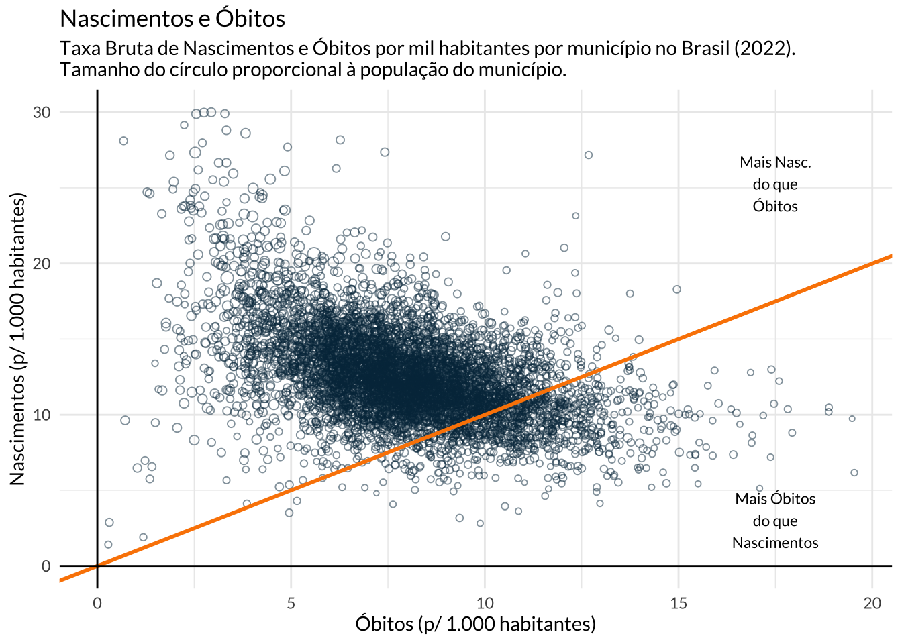
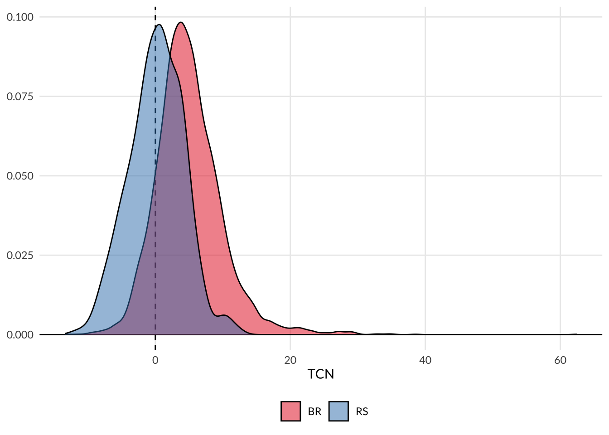
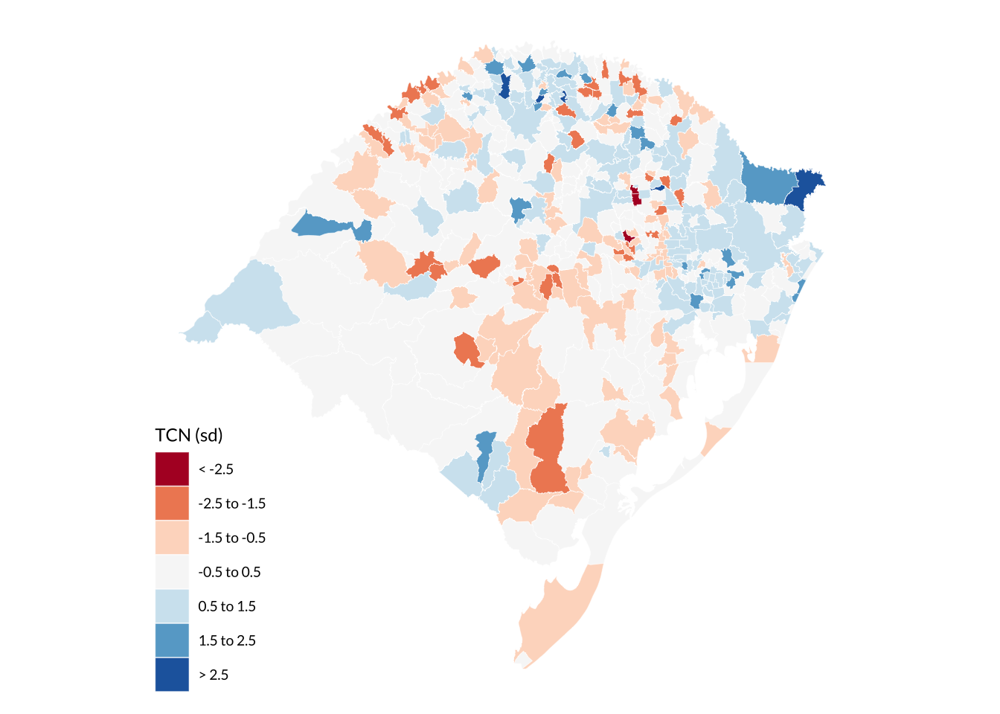
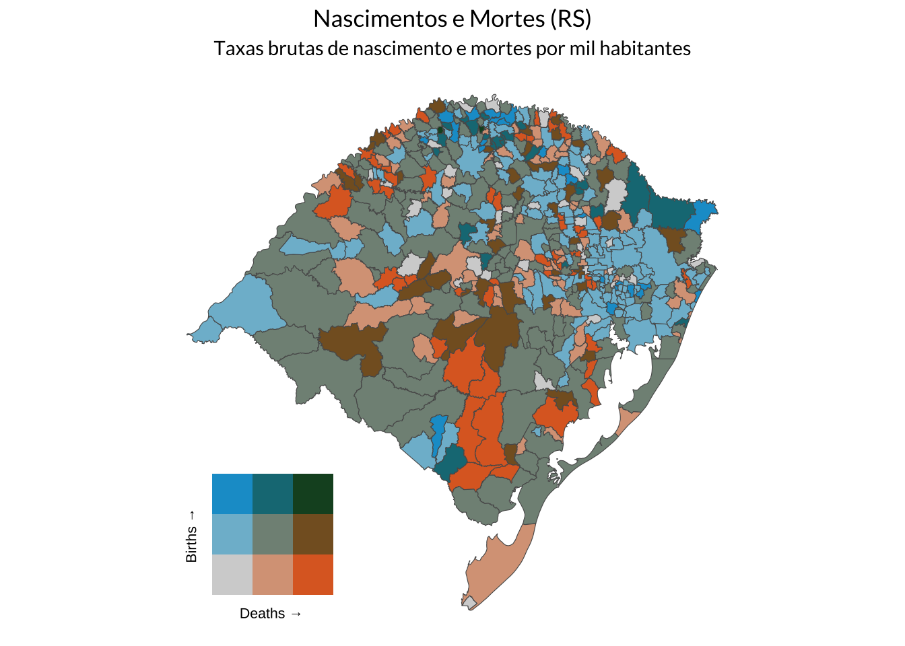
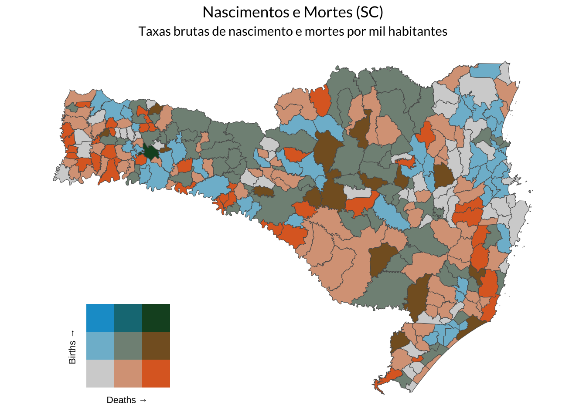
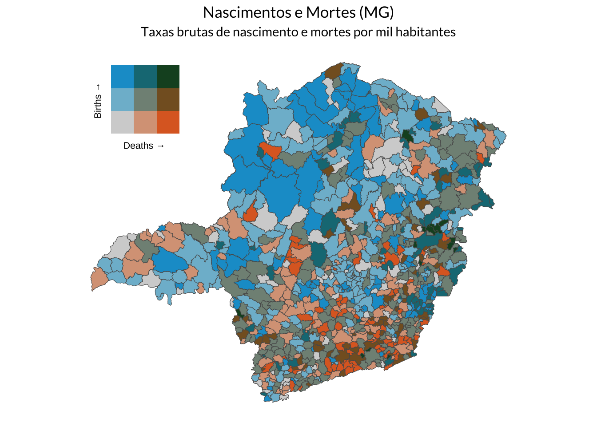

library(dplyr)
library(sf)
library(showtext)
library(biscale)
library(gt)
library(gtExtras)
library(ggplot2)
library(patchwork)
records <- qs::qread("...")
rec <- as_tibble(st_drop_geometry(records))Nascimentos e Óbitos
O IBGE recentemente atualizou as contagens de nascimento e óbitos no Brasil, no estudo períodico Estatísticas do Registro Civil. Esta base de dados estima o número total de nascidos vivos e de óbitos em cada município a cada ano. Os dados são bastante detalhados e permitem diversos tipos de análise. Já usei estes dados em outro post, onde mostrei como as divergências do Censo 2022 eram surpreendentes, visto que houve “houve cerca de 400 mil mortes a mais do que o projetado e 800 mil nascimentos a menos”.
Análise de Dados
Pode-se importar o shapefile dos estados via geobr.
state_border <- geobr::read_state(showProgress = FALSE)
dim_state <- as_tibble(st_drop_geometry(state_border))
dim_state <- dim_state |>
mutate(name_state = stringr::str_replace(
name_state,
"Espirito Santo",
"Espírito Santo")
)
# Aggregate data by state
state_records <- rec |>
summarise(across(population:births, ~sum(.x, na.rm = TRUE)), .by = "abbrev_state") |>
mutate(cbr = births / population * 1000, cdr = deaths / population * 1000)
state_pop <- left_join(state_border, state_records, by = "abbrev_state")Panorama
Quando se olha para a tendência dentro de cada estado, vê-se uma divisão regional. Os estados do Norte têm taxas de natalidade elevadas e taxas de mortalidade baixas. O Centro-Oeste tem TBN e TBM moderadas, com exceção do Distrito Federal, que tem ambas as taxas baixas. Já o litoral do país apresenta taxas de mortalidade moderadas ou elevadas e baixas taxas de natalidade. Isto é particularmente relevante, visto que a maior parte da população brasileira mora nestes estados.
É importante notar também que o Nordeste começa a exibir padrões demográficos similares a do Sul e do Sudeste, apesar de ter um renda per capita significativamente menor. Isto tende a se traduzir em desafios ainda maiores para o desenvolvimento econômico da região.
Code
rates <- bi_class(state_pop, cdr, cbr, style = "jenks", dim = 3)
pal <- "BlueOr"
p_map <- ggplot(rates) +
geom_sf(aes(fill = bi_class)) +
bi_scale_fill(pal = pal, dim = 3) +
guides(fill = "none") +
coord_sf(xlim = c(NA, -36.25)) +
theme_void()
p_legend <- bi_legend(
pal = pal,
dim = 3,
xlab = "Deaths",
ylab = "Births",
size = 8)
state_map <- p_map + inset_element(p_legend, 0, 0, 0.4, 0.4)
theme_map <- theme_minimal(base_family = "Lato") +
theme(
plot.title = element_text(hjust = 0.5),
plot.subtitle = element_text(hjust = 0.5)
)
state_map <- state_map + plot_annotation(
title = "Nascimentos e Mortes",
subtitle = "Taxas brutas de nascimento e mortes por mil habitantes",
theme = theme_map
)
state_map
De modo geral, a maior parte dos municípios continua apresentando números maiores de nascimentos do que óbitos. Cerca de 84% dos municípios tem taxas brutas de natalidade (TBN) superiores às suas respectivas taxas brutas de mortalidade (TBM). O gráfico abaixo mostra a dispersão entre a taxa bruta de natalidade, por mil habitantes, contra a taxa bruta de mortalidade, por mil habitantes. Outliers são removidos para facilitar a leitura dos dados.
Os municípios abaixo da linha laranja apresentam TBM maior do que TBN, isto é, são municípios onde se registram mais óbitos do que nascimentos. O contrário é válido para os municípios acima da linha: nos municípios acima da linha laranja há mais nascimentos do que óbitos. Isto, de fato, reflete o acelerado envelhecimento da população, como mostrei em outro post.
Code
sub <- rec |>
filter(cdr <= 20, cbr <= 30)
plot_scatter <- ggplot(sub, aes(cdr, cbr)) +
geom_point(
aes(size = sqrt(population)),
alpha = 0.5,
shape = 21,
color = "#023047"
) +
geom_abline(slope = 1, intercept = 0, lwd = 1, color = "#fb8500") +
geom_hline(yintercept = 0) +
geom_vline(xintercept = 0) +
geom_text(
data = tibble(x = 17.5, y = 3, label = "Mais Óbitos\ndo que\nNascimentos"),
aes(x, y, label = label),
family = "Lato",
size = 3
) +
geom_text(
data = tibble(x = 17.5, y = 25.25, label = "Mais Nasc.\ndo que\nÓbitos"),
aes(x, y, label = label),
family = "Lato",
size = 3
) +
guides(size = "none") +
labs(
title = "Nascimentos e Óbitos",
subtitle = stringr::str_wrap("Taxa Bruta de Nascimentos e Óbitos por mil habitantes por município no Brasil (2022). Tamanho do círculo proporcional à população do município.", 86),
x = "Óbitos (p/ 1.000 habitantes)",
y = "Nascimentos (p/ 1.000 habitantes)"
) +
theme_minimal(base_family = "Lato")
plot_scatter
A tabela abaixo apresenta os principais municípios com baixas taxas de natalidade e altas taxas de mortalidade. Vê-se que municípios de médio porte, do interior do Rio Grande do Sul, predominam na lista. É o caso de cidade como São Borja, São Gabriel, Bagé e Vacaria.
| Nome | UF | Taxa por mil | Absoluto | População | ||
|---|---|---|---|---|---|---|
| Nascimentos | Óbitos | Nascimentos | Óbitos | |||
| Cachoeira do Sul | RS | 11,02 | 12,71 | 882 | 1.018 | 80.070 |
| Petrópolis | RJ | 11,28 | 11,68 | 3.146 | 3.258 | 278.881 |
| São Gabriel | RS | 11,93 | 11,61 | 698 | 679 | 58.487 |
| Santos | SP | 9,09 | 11,56 | 3.807 | 4.838 | 418.608 |
| Rio Grande | RS | 10,79 | 11,43 | 2.070 | 2.194 | 191.900 |
| São Borja | RS | 11,16 | 11,43 | 666 | 682 | 59.676 |
| Tupã | SP | 9,21 | 11,42 | 589 | 730 | 63.928 |
| Penápolis | SP | 10,96 | 11,30 | 676 | 697 | 61.679 |
| Valença | RJ | 10,43 | 11,26 | 710 | 767 | 68.088 |
| Vacaria | RS | 13,89 | 11,06 | 892 | 710 | 64.197 |
| Bagé | RS | 11,22 | 11,00 | 1.323 | 1.297 | 117.938 |
| Camaquã | RS | 12,09 | 10,95 | 752 | 681 | 62.200 |
| Alegrete | RS | 10,26 | 10,92 | 743 | 791 | 72.409 |
| Peruíbe | SP | 13,56 | 10,91 | 927 | 746 | 68.352 |
| Cataguases | MG | 9,34 | 10,90 | 619 | 722 | 66.261 |
A taxa bruta de natalidade é uma boa proxy para a taxa de fecundidade e a sua redução, de fato, indica menor crescimento demográfico. A tabela abaixo mostra os principais municípios com TBN elevada. Todos os municípios listados estão na região Norte e os estados do Pará e, sobretudo, do Amazonas predominam na lista.
| Nome | UF | Taxa por mil | Absoluto | População | ||
|---|---|---|---|---|---|---|
| Nascimentos | Óbitos | Nascimentos | Óbitos | |||
| São Gabriel da Cachoeira | AM | 31,43 | 4,13 | 1.628 | 214 | 51.795 |
| Portel | PA | 31,13 | 2,14 | 1.946 | 134 | 62.503 |
| Breves | PA | 27,34 | 2,52 | 2.924 | 270 | 106.968 |
| Tabatinga | AM | 25,57 | 4,46 | 1.707 | 298 | 66.764 |
| Maués | AM | 24,97 | 4,02 | 1.528 | 246 | 61.204 |
| Coari | AM | 23,52 | 4,84 | 1.661 | 342 | 70.616 |
| Tomé-Açu | PA | 23,26 | 3,79 | 1.572 | 256 | 67.585 |
| Santana | AP | 23,11 | 4,00 | 2.487 | 431 | 107.618 |
| Juruti | PA | 22,64 | 3,38 | 1.152 | 172 | 50.881 |
| Tefé | AM | 21,79 | 3,24 | 1.605 | 239 | 73.669 |
| Buriticupu | MA | 21,55 | 3,77 | 1.196 | 209 | 55.499 |
| Oriximiná | PA | 21,30 | 4,61 | 1.455 | 315 | 68.294 |
| Tailândia | PA | 21,12 | 4,39 | 1.531 | 318 | 72.493 |
| Grajaú | MA | 21,12 | 5,21 | 1.560 | 385 | 73.872 |
| Parintins | AM | 21,06 | 4,70 | 2.030 | 453 | 96.372 |
Mapas
Como visto, a dinâmica populacional varia de região para região e até de estado para estado. O mapa abaixo normaliza a taxa de crescimento natural para o Rio Grande do Sul. Aqui, define-se que a TCN é a diferença entre a TBN e a TBM, isto é
\[ \text{TCN} = \text{TBN} - \text{TBM} = \frac{N}{P}\times1.000 - \frac{O}{P}\times1.000 = 1.000 (\frac{N - O}{P}) \] onde \(N\) é o número total de nascidos vivos no ano, \(O\) é o número total de óbitos registrados no ano e \(P\) é a contagem total da população no ano.
O gráfico abaixo mostra a distribuição da TCN entre os municípios do Rio Grande do Sul em contraste com os demais municípios do Brasil. Nota-se que o formato da distribuição é relativamente similar; contudo, a distribuição da TCN está deslocada à esquerda no gráfico, indicando que os municípios gaúchos tem TCN menores.

O mapa abaixo mostra a distribuição espacial da TCN no Rio Grande do Sul. Os dados são normalizados e as cores destacam os municípios que estão “nas pontas” da distribuição. A distância é mensurada em termos de desvios-padrão.
Os municípios em cinza apresentam TCN próximas à média do estado; já os municípios em vermelho apresentam TCN abaixo da média. Nota-se que o Centro-Sul do estado possui praticamente nenhum município com TCN acima da média. A região metropolitana de Porto Alegre e boa parte das regiões Norte e Nordeste do estado apresentam vários municípios em azul, indicando TCN positivas.

Pode-se olhar também para a distribuição simulatânea da TBN e da TBM no estado. A função abaixo implementa uma maneira fácil de montar esta visualização para qualquer estado do Brasil.
Code
available_states <- unique(dim_state$abbrev_state)
available_states <- available_states[order(available_states)]
available_states <- paste(available_states, collapse = ", ")
theme_map <- theme_minimal(base_family = "Lato") +
theme(
plot.title = element_text(hjust = 0.5),
plot.subtitle = element_text(hjust = 0.5)
)
plot_biscale <- function(
state,
t = 0.35,
r = 0.35,
b = 0,
l = 0,
pal = "BlueOr",
theme = theme_map
) {
if (is.numeric(state) && nchar(state) == 2) {
state <- dplyr::filter(records, code_state == state)$abbrev_state
}
if (length(state) == 0) {
stop("Argument `state` must be one of: ", available_states, ".")
}
sub <- dplyr::filter(records, abbrev_state == state)
rates <- bi_class(sub, cdr, cbr, style = "jenks", dim = 3)
p_map <- ggplot(rates) +
geom_sf(aes(fill = bi_class)) +
bi_scale_fill(pal = pal, dim = 3) +
guides(fill = "none") +
theme_void()
p_legend <- bi_legend(
pal = pal,
dim = 3,
xlab = "Deaths",
ylab = "Births",
size = 8)
p_map <- p_map + inset_element(p_legend, left = l, bottom = b, right = r, top = t)
p_map <- p_map + plot_annotation(
title = stringr::str_glue("Nascimentos e Mortes ({state})"),
subtitle = "Taxas brutas de nascimento e mortes por mil habitantes",
theme = theme_map
)
return(p_map)
}Rio Grande do Sul
Olhando para o mapa, vê-se que a região Centro-Sul do estado apresenta taxas de mortalidade moderadas ou elevadas. Aqui, os municípios em laranja são os mais preocupantes, por apresentar simultaneamente mortalidade elevada e natalidade baixa. A região metropolitana de Porto Alegre e boa parte das regiões Norte e Nordeste do estado apresentam vários municípios em azul claro e azul escuro, indicando TBN moderada ou elevada e TBM baixa.

Santa Catarina

Minas Gerais
